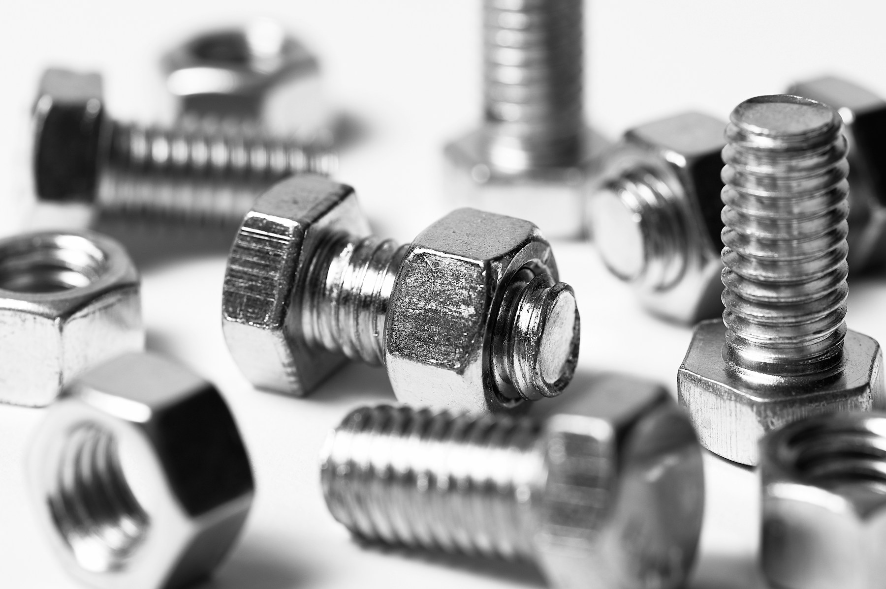

M6–M12 bolts
Threaded bolts for your assembly and fastening requirements.
- Diameter range: M6–M12
- Specify length and thread pitch
- Confirm material, grade and finish
CHENNAI · M6–M12 BOLTS & NUTS
Bolts and nuts for your next assembly. Discuss your M6–M12 fastening requirements with SSK Fasteners in Zamin Pallavaram, Chennai.
Explore fasteners
01 / FASTENING ESSENTIALS
Our product range focuses on M6–M12 bolts and nuts. Share your size, quantity and application so we can discuss the specification, availability and price.
Threaded bolts for your assembly and fastening requirements.
Nuts for compatible threaded bolts and fastening assemblies.
Need bolts and nuts together? Send us the details of both parts in one enquiry.
02 / OUR APPROACH
A fastener is a small part of the assembly, but its specification deserves a closer look. Make your next enquiry clear, complete and easy to discuss.
Identify the assembly, operating conditions and required fastening method.
Include diameter, length, thread pitch, material, grade and finish where known.
Check quantities, technical requirements, availability and delivery details before placing an order.
03 / MANUFACTURING PROCESS
A typical production route for bolts and nuts. The material, sequence and checks depend on the drawing, strength grade and finish specified for the order.
Select wire or bar to suit the specified material and grade. Prepare the stock for forming or machining.
Bolt heads and nut blanks are commonly shaped by cold forming. Machining may be used where the design or production quantity calls for it.
Bolt threads are commonly rolled; nut threads are generally tapped. Diameter, pitch and thread fit must match the specified assembly.
Heat treatment is used where required by the material and strength grade. Surface finishing is selected for the intended service conditions.
Check dimensions, threads and finish against the specification. Mechanical testing and documentation requirements should be agreed before production.
Separate parts by size and specification, confirm quantities and identify packs clearly for delivery and receipt.
Discuss your required production route, finish and inspection documents with us when requesting a quotation. Specific manufacturing arrangements and availability are confirmed for each order.
04 / POTENTIAL APPLICATIONS
Explore where correctly specified M6–M12 bolts and nuts may be used. Suitability depends on the joint design, loading, material, grade and operating environment.
Machine guards, equipment covers, brackets and fabricated assemblies.
Cabinet frames, mounting plates, enclosure hardware and cable-support assemblies.
Duct-support brackets, service frames and equipment mounting assemblies.
Rail connections and support brackets where the system design specifies compatible fasteners and corrosion protection.
Metal furniture, workbenches, shelving and storage assemblies designed for bolted connections.
Replacement fasteners for covers, guards and serviceable assemblies, matched to the original approved specification.
These are potential applications, not a list of existing customers or approvals. Load-bearing, safety-critical and outdoor joints require application-specific engineering selection.
Discuss your application05 / BUYING GUIDE
A few details help define exactly what you need. Use a drawing or reference standard when a written description is not enough.
Include the product type, diameter, length, thread pitch, material or grade, surface finish and quantity. Add your delivery location and required date. If you have a part number, drawing or reference standard, mention it too.
Our range focuses on M6–M12 bolts and nuts. Share the exact diameter, thread pitch, bolt length and quantity you need. Please contact us to confirm availability for a particular specification.
Dimensions are only part of the specification. Material, strength grade, coating and operating conditions also matter. Use the specification approved for your application and confirm suitability with your engineer.
No. Product families are an enquiry guide. Sizes, grades, availability, pricing and delivery need to be confirmed for each requirement.
06 / YOUR NEXT CONNECTION
Tell us what you need. Call, message or email SSK Fasteners for your next bolt and nut requirement.
+91 8300 986 956sskfasteners@gmail.comPlot No. 3, Dr Abdul Kalam Street,
Zamin Pallavaram, Chennai – 600117